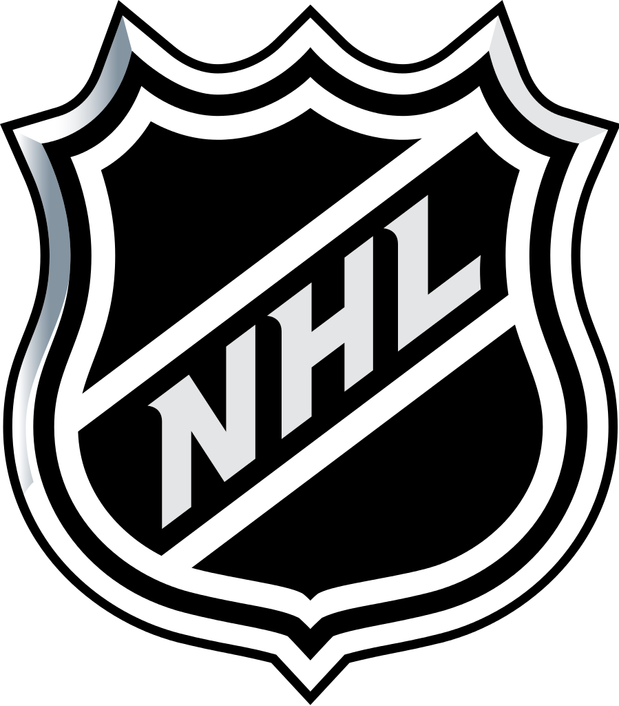
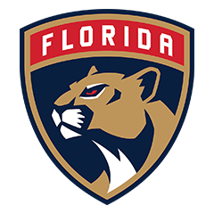

6 громких обменов, которые могут случиться этим летом в НХЛ
Сезон НХЛ находится в решающей стадии, и пока «Бостон» и «Сент-Луис» бьются в финале Кубка Стэнли, в прессу уже просачиваются слухи и подтверждённая информация о возможных обменах.
После чемпионата мира стало известно, что защитник попросил «Торонто» об обмене по личным причинам. В сборной Зайцев вспомнил, что ещё несколько лет назад у него было много других задач на площадке, кроме спецбригады меньшинства и обороны. Плюс он уже порядком устал от постоянной критики и давления в городе, где все с ума сходят по хоккею. Универсальность и правый хват делают Никиту привлекательным объектом для обмена, а для верности «Торонто» может отдать в довесок молодого проспекта или выбор на драфте.
Я слышал, что отношения между Кесселом и клубом испортились в прошлом сезоне. Он знает, что его
обменяют, потому что нет причин оставаться, но он собирается уйти на своих условиях, если
«Питтсбург» захочет отдать его не в одну из восьми команд
, — написал в своей колонке
инсайдер Sportsnet Эллиотт Фридман.
1 июля у Зайцева вступает в силу пункт контракта, согласно которому он может выбрать 10 команд, куда его нельзя менять. Но, учитывая желание самого хоккеиста уйти, это не должно стать проблемой. Сейчас боссы «Торонто» только начали прорабатывать варианты обмена, но ясно одно – сезон-2019/20 Зайцев начнёт в новой команде.
Два года назад «Нэшвилл» играл в финале Кубка Стэнли, а в этом неожиданно вылетел уже в первом раунде. В команде куча крутых защитников, но мало результативных нападающих. К тому же надо думать о будущем – в следующем году истекают контракты Романа Йози и Микаэля Гранлунда, которые ждут серьёзную прибавку к зарплатам.
Главные новости:
- Хабиб — Фетисову: дайте поддержки. Нам бы лёд в Дагестане. Заиграем
- «Ванкувер» хочет вернуть защитника Никиту Трямкина
- Крикунов — о Кагарлицком: не хватило денег, СКА воспользовался ситуацией
- Дмитрий Кагарлицкий подписал трёхлетний контракт со СКА
- Свечников: Р. Ротенберг общался с агентом во время серии с «Вашингтоном»